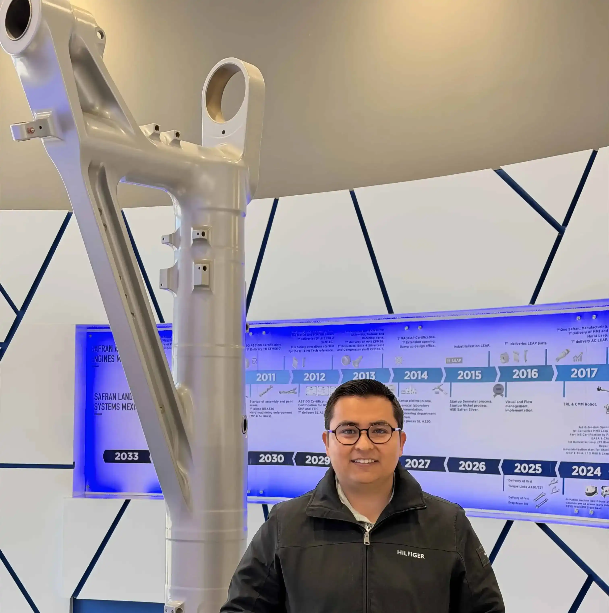

Home
About Me
My name is Luis Angel Quezada Bautista, and I am an Aeronautical Engineer from Mexico. I currently work as an Engineering Analyst in the aerospace industry, where I use engineering analysis, problem-solving, and technical skills to support aircraft landing gear repairs. I enjoy learning new things, especially topics related to engineering, mathematics, technology, and programming. I am currently learning Python, HTML, CSS, and JavaScript to expand my technical skills and explore new ways to solve problems through programming. In my free time, I enjoy learning about cars, working on personal projects, and continuing to develop both professionally and personally.
Student Photo

Web Certificate Courses
Total Credits: